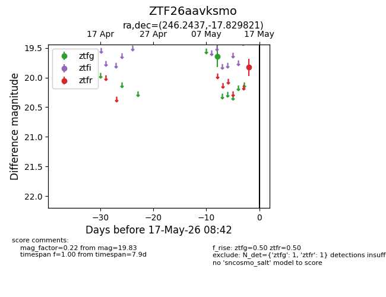
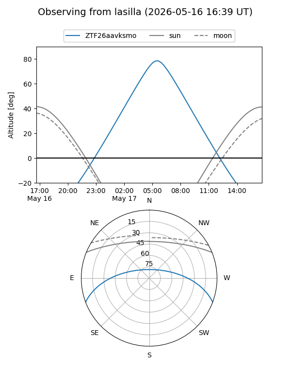
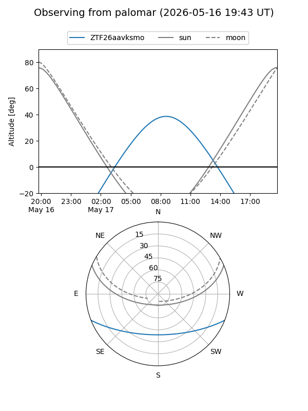

ZTF26aavksmo
Target ZTF26aavksmo at 2026-05-17 08:44
Aliases and brokers:
FINK: link
Lasair: link
ALeRCE: link
alt names
ZTF26aavksmo (ztf,fink_ztf)
Coordinates:
equatorial (ra, dec) = 246.2437,-17.82982
equatorial (HMS+DMS) = 16:24:58.50,-17:49:47.35
galactic (l, b) = (358.1143,+21.45163)
Flags:
Photometry:
last ztfg=19.64, ztfr=19.83
1 ztfg, 1 ztfr detections
Lightcurve

Visibility


Additional plots